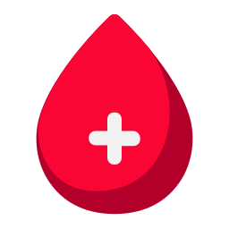
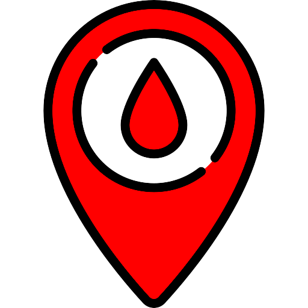

REQUISITOS BÁSICOS PARA DOAÇÃO
- Estar em boas condições de saúde
- Documento oficial com foto
- Estar descansado (Ter dormido pelo menos 6 horas antes de doar)
- Ter entre 18 e 69 anos (permitida doação a partir de 16 anos se acompanhado de responsável legal à cada doação)
- Estar alimentado (evitar alimentos gordurosos 3h antes da doação)
- Não ingerir bebida alcoólica nas ultimas 12 horas
IMPEDIMENTOS PARA DOAÇÃO
- Vacinação recente
- Piercing na língua ou genital
- Tatuagem, maquiagem definitiva feitas nos últimos 12 meses
- Sintomas de gripe nos últimos 15 dias
- Estar grávida ou amamentando
- Cirurgias Específicas (isso será avaliado na entrevista)
- DST ou situações nas quais há maior risco de adquirir DST, aguardar 12 meses
- Faz uso de algum medicamento (isso será avaliado na entrevista)
- Ter tido hepatite após os 11 anos de idade
LOCAIS
HEMOVIDA - Hospital Regina
(51) 2581-5241 - Av. Dr. Mauricio Cardoso, 711- B. Hamburgo velho, Novo Hamburgo
Unidade de coleta de sangue do hospital Getúlio Vargas
(51) 3451-820 - Rua pinheiro machado, 331, B. Diehl, sapucaia do sul
HEMOCENTRO Porto Alegre
(51) 3336-6755 - Av. Bento Gonçalves, 3722- Bairro Partenon, Porto Alegre